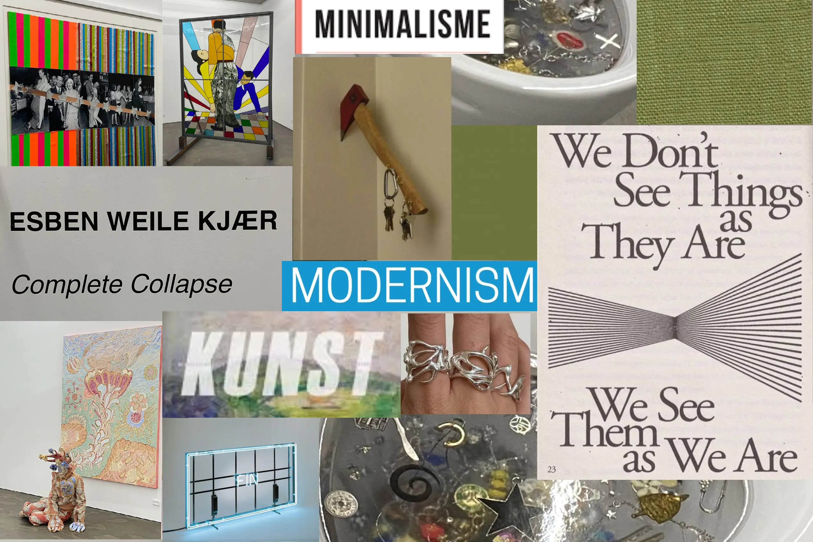

T2 Grundlæggende Web
I Tema 2, Grundlæggende Web fik vi kendskab til de basale redskaber som man besidder som multimediedesigner. Vi fik skabt et fundament inden for kodning i form af html og css. Her lærte vi om forskellige redskaber i form af wireframe,layout diagram og nogle forskellige designprincipper. I studiestartsprøven og emnesitet benyttede jeg mig af henholdsvis både layout diagram og wireframe for at få en bedre forståelse for det website jeg skulle lave. Grunden til at jeg anvendte det i de to opgaver var at jeg ved hjælp at wireframe og laoytdiagrammet bedre kunne visualisere det arbejde jeg havde foran mig og derfor gjorder det kodningen lettere at arbejde med.
Layoutdiagram til emnesite
Emnesite refleksion
Mine designvalg angående emnesitet faldt på modernisme og minimalisme. Med fokus på at det skulle være et simpelt design med dæmpede farver og fokus på de valgte billeder som understøtter teksten, ved brug af loven om nærhed og kontraster. Ud fra det første moodboard jeg lavede til emnesitet kan jeg i bakspejlet se at min forståelse for minimalismen ikke kom til udtryk i det moodboard. Selve hjemmesiden endte dog mere minimalistisk end det nævnte moodboard. Set tilbage på opgaven er der nogle ting jeg ville have ændret, hvis jeg skulle lave det i dag.
Hvad ville jeg ændre?
I dag, ville jeg tilføje en accent farve til den grønne som allerede er i spil. Det ville skabe noget mere bevægelse på mit site. Jeg ville fjerne mit logo som er den grønne oval med teksten “ART”. Jeg ville i stedet benytte mig af en stærk font som ville passe bedre til resten af sitet. På siden udstillinger ville jeg skabe mere plads mellem mine afsnit. Jeg ville eventuelt tilføje en ramme rundt om hver sektion for at fremhæve hvad der passer sammen angående teksten og billederne. Udover det ville jeg gøre min h2 større og eventuelt benytte førnævnte accentfarve. På siden cv ville jeg skabe mere plads mellem h1 og p. Jeg ville også på denne side benytte mig af den førnævnte accentfarve. Jeg ville benytte mig af en font som var Sans Serif da det er nemmere for læseren og passer bedre ind i den stilart jeg går efter.